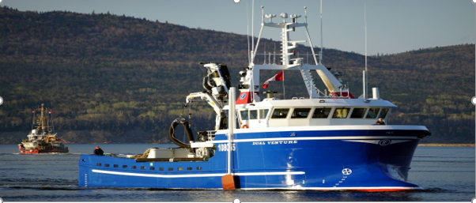

La pêche dans le monde
La pêche dans le monde
A PROPOS DE NDIAYA
A PROPOS DE NDIAYA
Je m’appelle Ndiaya Sall Ndiaye étudiante en L3 géographie et aménagement
du territoire à l’université d’Avignon et des pays de Vaucluse. Je suis
étrangère et de nationalité sénégalaise. J’ai passé mes trois premières années
à l'université cheikh Anta Diop de Dakar jusqu'à l'obtention de ma licence. Je
suis passionnée par les SIG depuis ma première année universitaire au Sénégal
mais malheureusement les cours qui étaient dispensés étaient plus théoriques
que pratiques. Grâce aux cours que j’ai eu à faire avec Monsieur Redjimi cette année
j’ai pu avoir quelques notions là-dessus. Raison pour laquelle cette année j’ai
fait une production de site web. Il porte sur la pêche à l'échelle mondiale.
Les données étudiées sont tirées de la majeure partie sur le site de la Fao.
Pour plus de renseignements merci de me contacter
Mail: ndiayasall1995@gmail.com
Introduction
La pêche est une activité qui consiste à capturer des animaux aquatiques notamment des poissons, des crustacés, des céphalopodes etc.… dans leur biotope océans, mers, cours d’eau, lacs et mares. Elle est exercée par les pêcheurs comme profession ou loisir. Elle est encadrée par une réglementation dont son objectif est de protéger au mieux la biodiversité, l’environnement et les ressources halieutiques. La pêche joue un rôle important dans l'économie des pays, elle génère des emplois, crée des revenus et constitue également une véritable source d’alimentation. Elle est pratiquée dans les pays développés comme dans les pays sous-développés. Toutefois, elle diffère du fait du niveau de développement. Les pays développés pratiquent une pêche industrielle avec l’utilisation de gros bateaux par contre les pays en développement pratiquent une pêche artisanale avec des pirogues. Plusieurs acteurs entrent en jeu pour promouvoir le développement de la pêche. Toutefois, aujourd'hui la pêche est confrontée à de nombreux problèmes liés surtout à une surexploitation abusive ce qui diminue réellement le stock des produits halieutiques.
created with
Offline Website Builder .